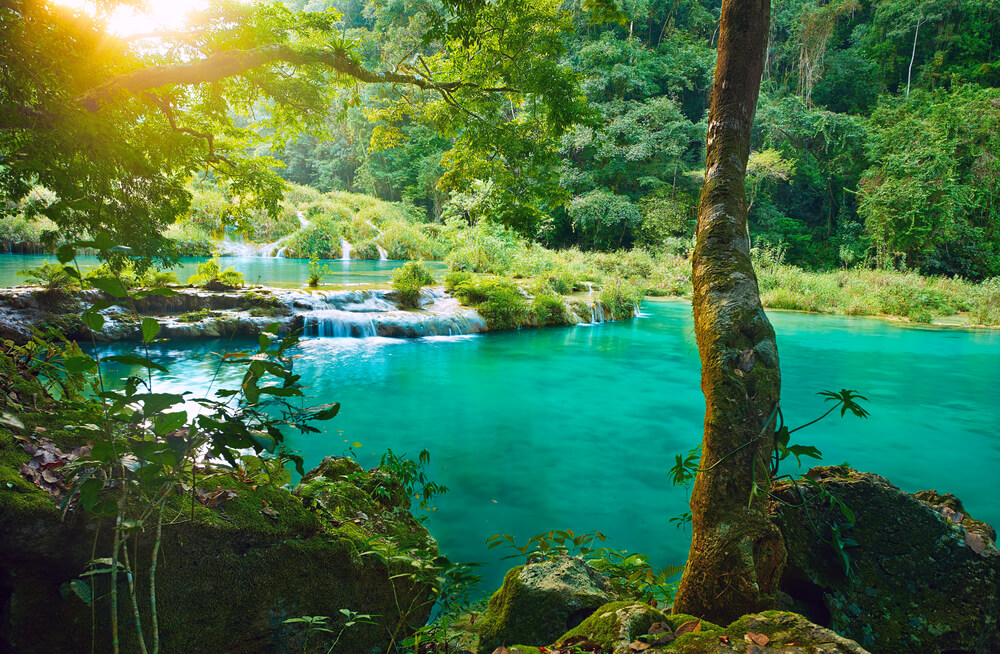
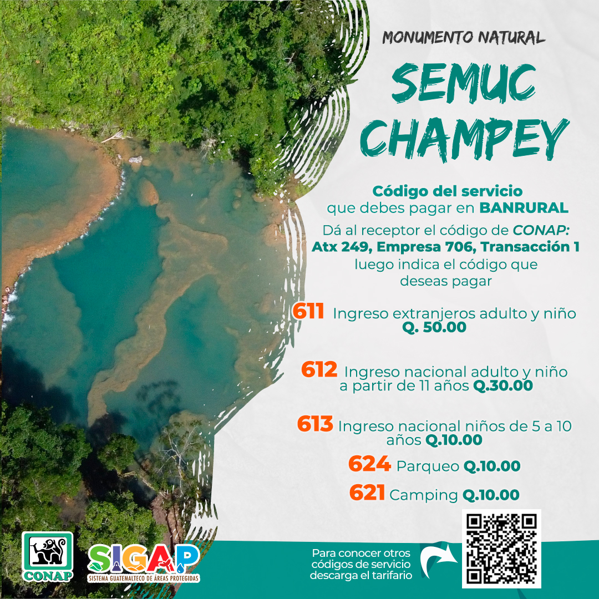
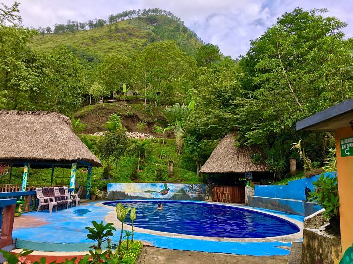

Ubicación: Semuc Champey se encuentra en el departamento de Alta Verapaz, en el corazón de Guatemala. Este espectacular paraje natural está ubicado cerca del pequeño pueblo de Lanquín, a aproximadamente 11 kilómetros de distancia.
Características Principales: Semuc Champey es famoso por sus impresionantes pozas de agua turquesa, formadas sobre un puente natural de piedra caliza que se extiende a lo largo de unos 300 metros sobre el río Cahabón. Estas pozas están interconectadas, creando una serie de piscinas naturales de diferentes tamaños y profundidades, ideales para nadar y relajarse.
Atractivos:
Acceso: Llegar a Semuc Champey puede ser un desafío debido a las carreteras sin pavimentar, pero la travesía vale la pena para quienes buscan una experiencia auténtica y natural. Los visitantes suelen llegar primero a Lanquín, desde donde pueden tomar un transporte 4x4 hasta Semuc Champey.
Recomendaciones: Es recomendable llevar ropa cómoda para el senderismo, traje de baño, repelente de insectos y suficiente agua. También es aconsejable visitar con un guía local para aprovechar al máximo la experiencia y garantizar la seguridad.
|  |  |  |
| Fecha | Horario | Actividad | Lugar |
|---|---|---|---|
| 01/08/2024 | 08:00 - 09:00 | Desayuno y Orientación | Hotel en Lanquín |
| 01/08/2024 | 09:00 - 12:00 | Senderismo y Mirador | Semuc Champey |
| 01/08/2024 | 12:00 - 13:00 | Almuerzo | Área de Picnic |
| 01/08/2024 | 13:00 - 16:00 | Nado en las Pozas | Semuc Champey |
| 01/08/2024 | 16:00 - 18:00 | Visita a la Cueva de Lanquín | Cueva de Lanquín |